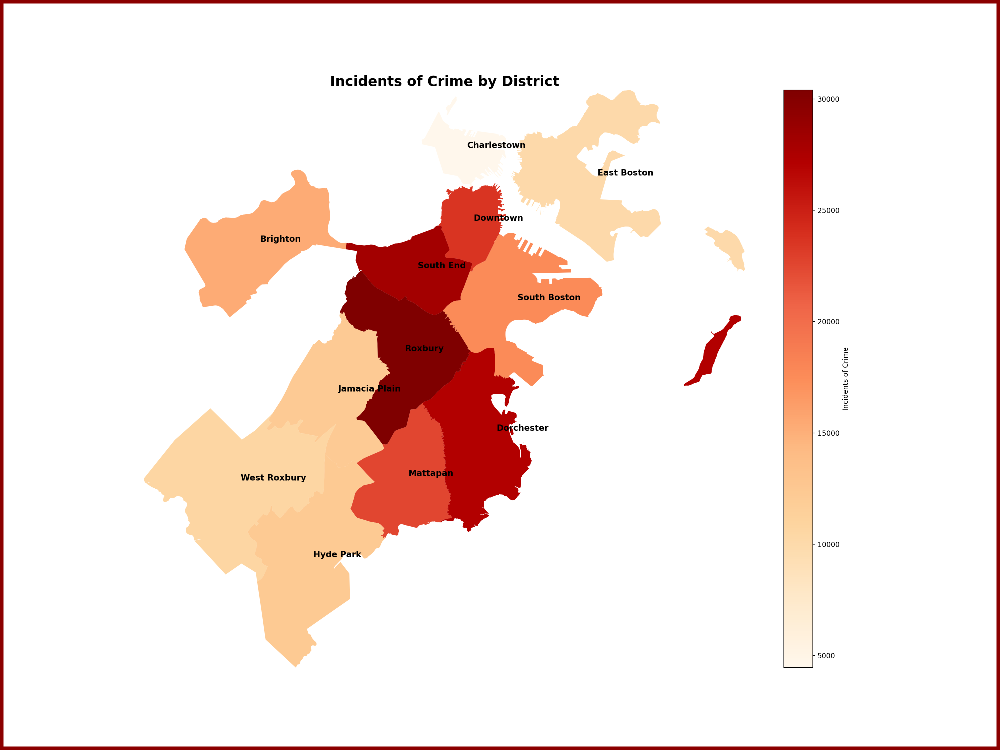
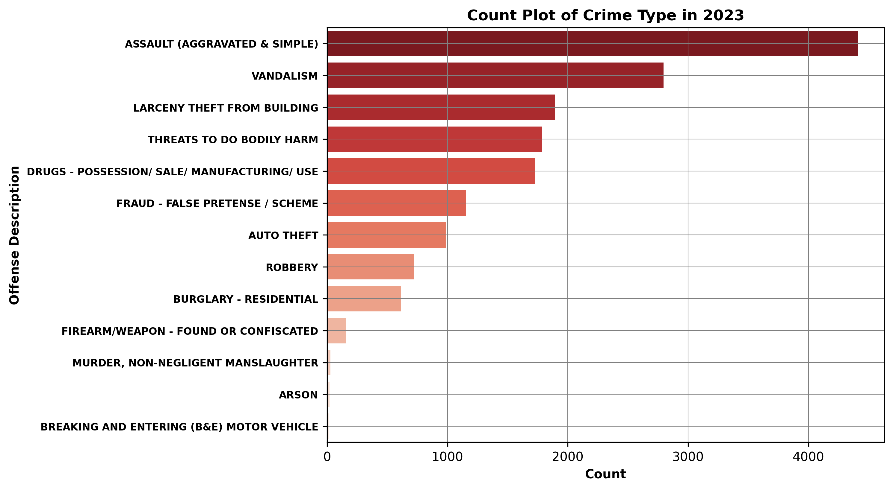

Analyzing Crime in Boston: Looking for Housing
Introduction
Researching crime rates in Boston is essential for assessing the safety of various neighborhoods
when making a choice on where to live. These crime statistics reveal not only the frequency crime,
but also the types of crimes prevalent in different areas, serving as key indicators of
neighborhood safety and stability.
Crime rates are related to important aspects such as housing quality, community investment, and police
effectiveness. High crime rates, especially violent crimes such as assault or robbery, may deter
residential and business investments, leading to a decline in neighborhood desirability. On the other
hand, areas characterized by low crime rates or predominance of less severe crimes like petty theft
are typically more attractive for living, contributing to improved community confidence and growth.
Furthermore, the impact of specific crimes on safety and lifestyle can vary significantly. For
instance, a high incidence of violent crime might be a primary concern for families with children,
whereas areas with elevated rates of property crime might raise alarms for homeowners and businesses.
To learn more about crime in Boston and its implications for housing selection, consider visiting
law enforcement websites or exploring analysis reports from reputable research organizations such as
the Data From Boston Police Departments or
the City of Boston's Official Website.
Data Introduction
Our analysis is centered on data obtained from the Boston Police Department, with a specific focus
on crime incidents from the year 2023. To provide valuable insights pertinent to personal and home safety
for those seeking housing, we have refined our scope to the top 14 types of crimes. These categories were
selected based on their relevance to personal and home safety and include things like murder, assult, and theft.
Our goal is to assist individuals in making informed decisions about housing by
providing a detailed overview of the most pertinent criminal activities.
| Variable Name |
Details |
| INCIDENT_NUMBER |
Given incident ID |
| OFFENSE_CODE |
Grouped based on different types of offenses |
| OFFENSE_DESCRIPTION |
Description of crime (Assult, Auto Theft, ect.) |
| DISTRICT |
Code of police district crime was handled by |
| SHOOTING |
Number of shootings involved in crime |
| OCCURRED_ON_DATE |
Datetime of incident (year, month, day, time) |
| STREET |
Street where crime took place |
| Lat |
Latitude location of incident |
| Long |
Longitude location of incident |
Our first visualization presents an interactive map that plots crime
occurrences across Boston Police Districts, using Folium to bring geospatial data
to life. It offers a comprehensive view, with each crime type distinguished by color
for clarity. The map’s interactivity empowers users to filter and focus on crimes of
particular interest, providing a user-driven exploration of crime distribution by
neighborhood. This visualization effectively sets the stage for anyone considering
a move to Boston, granting insights into safety across the city and helping identify
patterns of criminal activity essential for making informed housing decisions.
Users can also click on individual crime points to learn more about each specific incident.
Overall, this graph is definitely very helpful, but we also wanted a simpler version that
could be easily understood, which led us to our second graph: A Static Heatmap Breaking
Down the Number of Crime Incidents Based on District (directly below). This graph was
designed to be very simple and easy to navigate for the average person. From this
graph we can gather places like Roxbury and South End have the most crime instances, while
Charlestown and East Boston have the least.
Overview of the Crime Distribution: Crime Heatmap


Our third visual is a bar chart showing the amount of each crime
in 2023. The y-axis lists types of crimes, such as assault
(both aggravated and simple), vandalism, and auto theft, among
others, with the counts displayed along the x-axis. Assault appears
to be the most frequent, with over 4000 incidents, whereas arson
and murder, non-negligent manslaughter are the least frequent, each
with fewer than 500 incidents. This straightforward representation
allows visitors to quickly discern the relative frequency of different
crimes in Boston, offering an informative snapshot for individuals
concerned about local safety, which is particularly useful
for those considering moving to or within the city.
Shootings Based on District
Our fourth visual is a bar chart that presents a detailed breakdown
of shooting incidents within Boston's various districts for the year
2023. Displayed via horizontal bars, the districts are ranked by the
frequency of shootings, with the x-axis quantifying the incidents.
The chart starkly highlights Roxbury (over 46 shootings) and Mattapan
(around 34 shootings) as the areas with the highest incidences.
These two districts are followed by districts with progressively fewer
events, establishing a clear visual hierarchy of gun violence severity.
The districts with the least amount of shootings are West Roxbury and
Charlestown.
The specificity of focusing on shootings is because gun violence is a
primary safety concern when deciding on a place of residence. Shootings
are often a bellwether for broader safety issues and can
disproportionately affect the perception of a neighborhood's security.
However, this graph does present limitations; it isolates shootings from
the context of overall crime. While it is a pivotal piece of the puzzle,
it's essential for viewers to integrate this data with other crime
statistics and visualizations provided to form a comprehensive view of
public safety. A holistic approach to interpreting these visualizations
is crucial.
Our fifth visual is a line graph showcasing trends of crime in boston.This line
graph offers an interactive way to view crime trends in Boston over three years
2020-2023. Users can select specific crimes to analyze patterns. This is
something law enforcement can use to assess their response to crime. Furthermore,
for our main goal of helping people look for housing, this could help potential
residents gauge neighborhood safety. The data reveals no overall trend of
increase or decrease but shows seasonal peaks, particularly in summer for
crimes like assault and auto theft, while other crimes like robbery and
burglary remain relatively constant. Notably, auto thefts register the highest
frequency, highlighting it as a key concern for city safety and for individuals
considering moving to Boston.
Incident Count Per Districts
The final visual is a bar chart titled "Count Plot of the Frequency of Crime in
Each Boston District''. It presents a clear and interactive visualization using
D3.js, allowing users to select and view crime incident counts for specific
districts in Boston. The y-axis lists the districts, while the x-axis represents
the number of reported incidents.
Roxbury stands out with the highest count,
depicted in red, indicating a significant volume of crime in comparison to other
districts.Meanwhile, Charlestown and East Boston stood out in having the least
amount of crime incidents. This interactive feature of selecting districts enables
users, especially those considering relocation, to closely examine the crime
statistics of each area, offering a valuable perspective on safety and helping
inform their decision-making regarding neighborhood choices.
Conclusion
When interpreting our data, it's crucial to recognize the context behind the numbers.
Some areas, particularly residential neighborhoods, may show higher rates of certain
crimes, like residential burglary, due to their housing density. Additionally, the
history of each neighborhood—factors such as redlining and gentrification—can deeply
influence current crime statistics and must be taken into account to fully understand
the complexities of the data.
Our analysis indicates that Roxbury, South End, and Dorchester have the highest rates
of the specified crime types in Boston. While these findings are significant, it's
essential to note that other neighborhoods might have higher instances of crimes not
directly related to personal safety or housing concerns, which weren't included in our
specified crime types.
This project provides preliminary insights and should be considered as one of many tools
for evaluating neighborhood safety. Future residents should weigh these findings alongside
other factors, such as community resources, neighborhood cohesion, and future development plans,
when making decisions about where to live. Our research serves as a starting point for
understanding crime distribution across Boston, and we encourage a holistic approach when
considering personal and community safety.
Authors: Jessica Wilson & Rhoda Zerit
Authors: Jessica Wilson & Rhoda Zerit